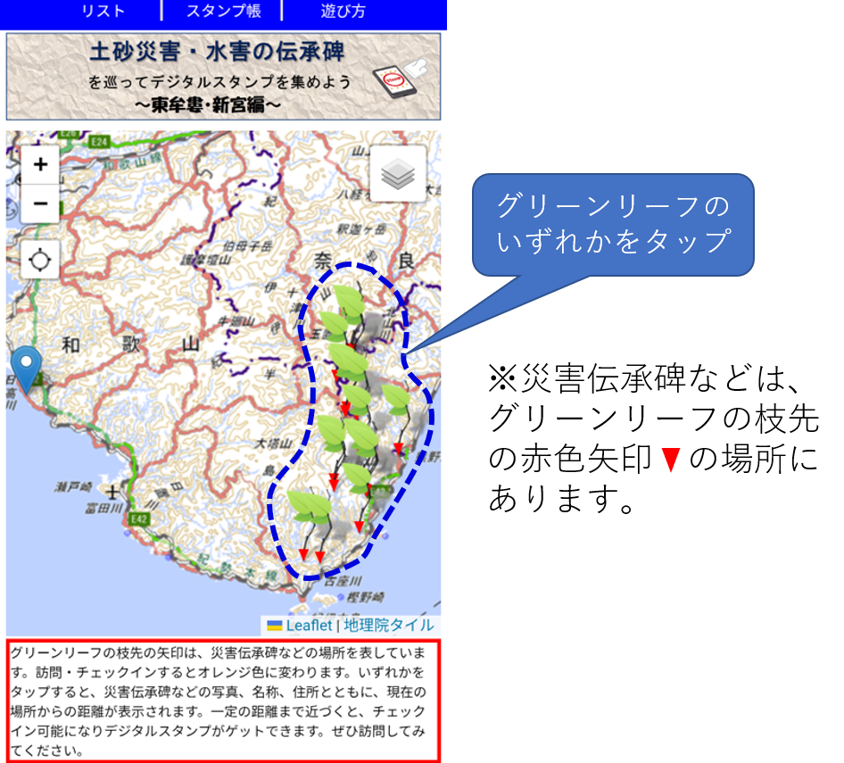
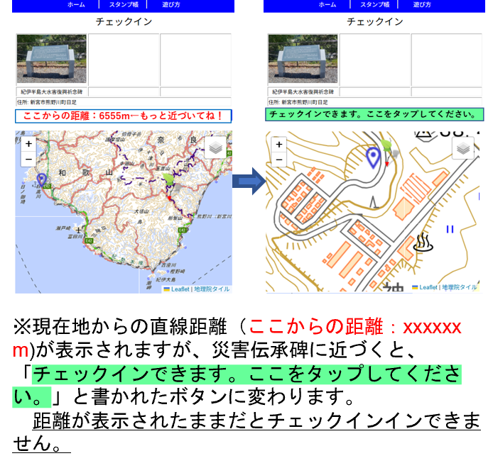
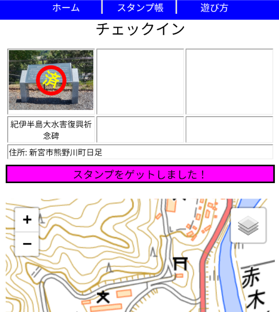
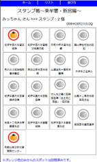

つぎに示す地図上のグリーンリーフ（緑の葉）は災害伝承碑などの場所を表しています。

いずれかをタップすると、災害伝承碑などの写真と名称が表示されます。また、現在地からの距離も表示されます。
近くまで行けば、チェックインが可能となり、距離表示の部分が緑色の「チェックインできます。ここをタップしてください。」のボタンに変わります。

この緑色の「チェックインできます。ここをタップしてください。」と書かれたボタンをタップすると、つぎの図のように、「スタンプをゲットしました。」の表示に変わります。
このようにしてデジタルスタンプをゲットできます。

ゲットしているデジタルスタンプは、スタンプ帳で確認できます。

※注意：
1)スマートフォンの位置情報へのアクセスを可能にしておいてください。
2)使用するスマートフォンやブラウザをかえると、過去にゲットしたデジタルスタンプは反映されません。
3)ブラウザはGoogle Chrome, Apple Safari, Microsoft Edge, Mozilla Firefoxで動作確認をしていますが、ブラウザのバージョンによっては動作しない可能性もあります。
ただし、Apple Safariをブラウザとして利用している場合、ブラウザの仕様で、サイトにアクセス後７日間ユーザーの操作がない場合、保存したデータが削除されてしまう可能性があります。その場合、獲得したスタンプが消えてしまい、復活できません。ご留意ください。スタンプ帳を適宜スクリーンショットして保存しておくことをお勧めします。

スタンプを６個以上ゲットした方には、先着１００名様に記念品を差し上げます。
和歌山県土砂災害啓発センター（場所などは以下を参照してください）を訪問して、スマートフォンのスタンプ帳を提示してください。
ただし、開館時間と休館日にご留意ください。
※記念品の郵送依頼には対応しません。
住所：和歌山県東牟婁郡那智勝浦町市野々3027番6
電話番号：0735-29-7531
メール：e0806041@pref.wakayama.lg.jp
開館時間：9時から12時、13時から17時
休館日：原則として年末年始
※大雨警報等が発表された場合休館となります。
入館料：無料
記念品引き換えの期限：令和８年５月３１日
※とくに遠方からお越しの場合は、事前に連絡して頂くことをお勧めします。
なお、記念品は数に限りがあり、参加者おひとり（スマートフォン１台）あたり、1個に限らせていただきます。また、記念品をお渡しする際、簡単なアンケートにご協力をお願いします。
すでにゲットしているすべてのスタンプを破棄してリセットします。一旦リセットすると復元はできません。
災害伝承碑の説明文は、以下の文献などを引用または参考にしています。それぞれの災害伝承碑の説明文中に文献番号を示しており、それらは以下の文献と対応しています。
1) 那智勝浦町：紀伊半島大水害ー平成23年9月 町を襲った台風12号の記録ー。
2) 国土交通省：［検証］2001年の自然災害、URL:https://www.mlit.go.jp/ river/pamphlet_jirei/bousai/saigai/2001/pdf/page014_015.pdf。
3) 和歌山県：和歌山県災害史。
4) 国土交通省近畿地方整備局大規模土砂災害対策技術センター：60 年毎（1889 年, 1953 年, 2011 年）に繰り返される紀伊半島の歴史的大規模土砂災害、
URL:https://www.kkr.mlit.go.jp/kiisankei/center/img/saigaishi.pdf。
5) 国土交通省：十津川大水害について、URL:https://www.kkr.mlit.go.jp/ kinan/river/kumano_kondan/PDF/information_panel/19. pdf。
6) 国土交通省国土地理院：自然災害伝承碑、URL:https://www.gsi.go.jp/ bousaichiri/denshouhi.html。
7) 和歌山測候所：紀州災異誌。
8) 古座川町：二級河川古座川浸水実績図〔平成23年台風12号〕、URL:http://www.town.kozagawa.wakayama.jp/pdf/sinsuijisseki.pdf。
9) 十津川村：大水害の記録十津川村ー平成23年台風23号「紀伊半島大水害」ー。
10)新宮市：紀伊半島大水害 豪雨ー平成23年台風12号 発生から100日 新宮市の記録～未来につなぐメッセージ～ー。
11)新宮市：新宮市史。